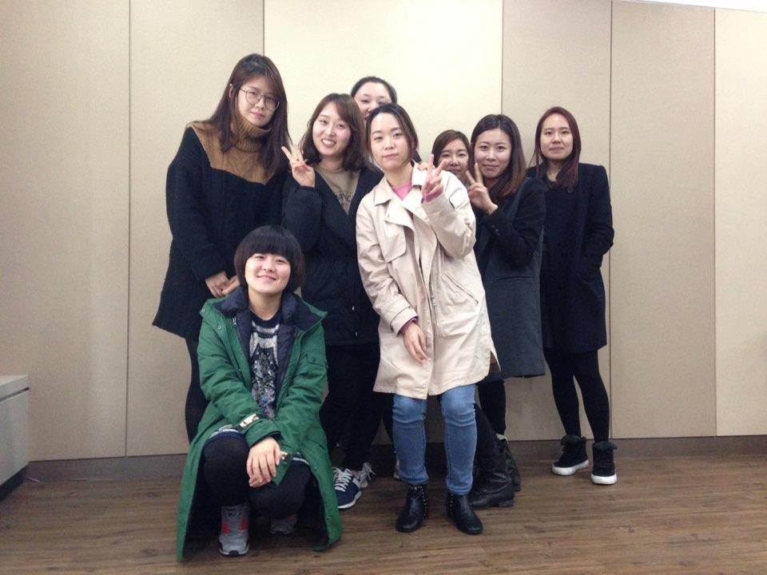
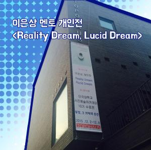
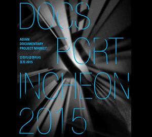
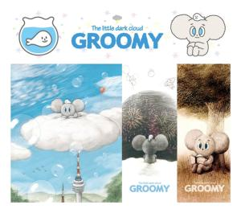
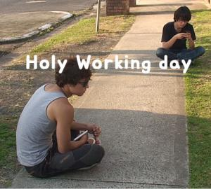
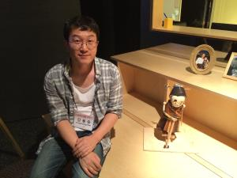
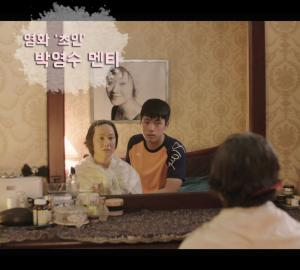

-  (주)아이엠티브이 "창의인재동반사업을 통해 작가의 의미를 배웠습니다!" 2015-12-22 창의인물 멘티
- 동국대학교산학협력단 영화 '초인' 감독, 서은영 멘티와의 인터뷰 2015-12-16 창의인물 멘티
-  아트센터나비미술관 멘티와 함께 한 이은상 멘토 개인전을 소개합니다 2015-12-16 창의인물 멘토&멘티
-  (재)방송콘텐츠진흥재단 2015년 제작지원 3관왕 마민지 멘티의 <버블 패밀리>를 소개합니다 2015-11-27 창의인물 멘티
-  기획 구루미(Groomy) : 하늘과 바다 두 친구의 우정과 여행 이야기 2015-11-20 창의인물 멘티
-  (재)방송콘텐츠진흥재단 우리 주변 일상에서 소재를 찾다, 홀리워킹데이 (Holy Working Day, 2015) 2015-11-20 창의인물 멘토&멘티
-  아트센터나비미술관 국내 메이커가 활성화 되었으면 좋겠어요! 2015-11-19 창의인물 멘토
-  (주)와이랩 제 20회 부산국제영화제 대명컬쳐웨이브상 수상! 2015-11-17 창의인물 멘티
- 처음 목록으로 이동
- 이전 목록으로 이동
- 1001
- 1002
- 1003
- 다음 목록으로 이동
- 끝 목록으로 이동
"창의인재동반사업을 통해 작가의 의미를 배웠습니다!"
2015-12-22안녕하세요, 창의드림 독자 여러분! 요즘 어떤 드라마를 즐겨보고 계신가요? 아마 많은 분들이 <응답하라 1988>이라고 대답하시지 않을까 싶습니다. 드라마의 인기에 힘입어 '응답하라' 신드롬의 주역, 이우정 작가를 향한 반응 또한 뜨거운데요. 세대를 초월해 많은 시청자들에게 감동을 전할 수 있는 특별한 직업이 바로 방송작가가 아닐까 싶습니다. 미래의 콘텐츠 리더를 지원하는 창의인재동반사업에도 시청자들에게 따뜻한 메시지를 전하고 싶은 이들이 있습니다. 이 중 오늘은 아이엠티브이 플랫폼 김지수·김보라 멘티의 이야기를 들어보려고 합니다.

채보람 기자 : 안녕하세요. 먼저 자기 소개 부탁드리도록 하겠습니다.
김지수 멘티 : 안녕하세요, 2015년 창의인재동반사업 멘티로 활동하고 있는 김지수라고 합니다.
김보라 멘티 : 반갑습니다. 방송작가를 지망하는 김보라입니다. 아이엠티브이 플랫폼에서 멘토링과 교육을 받고 있습니다.
채보람 기자 : 네, 감사합니다. 이제 올해 창의인재동반사업도 후반부에 접어들었는데요. 어떤 계기로 멘티에 지원하게 되셨는지 궁금합니다.
김지수 멘티 : 이전 기수에 아는 분이 계셨어요. 여러 방면에서 지원을 받을 수 있다고 알려주셔서 지원하게 되었습니다.
김보라 멘티 : 저도 교육원에서 방송작가 관련 수업을 듣다가 알게 되었어요. 현업에 계신 분들께 멘토링을 받을 수 있는 좋은 기회라 신청하게 되었습니다.
채보람 기자 : 창의인재동반사업 멘토링만의 장점을 소개해 주신다면요?
김지수 멘티 : 모든 멘토분들이 실전에서 활동하고 계셔서 현장감 있는 이야기를 많이 들을 수 있어요. 더불어 방송 시스템의 구성과 과정, 작가의 자세를 배울 수 있었습니다.
김보라 멘티 : 작가는 어떤 것일까, 약간 막연했었거든요. 멘토링을 통해 진짜 작가가 무엇인지 명확하게 알 수 있게 되었습니다.
채보람 기자 : 아이엠티브이 플랫폼을 통해 구성 다큐, 예능, 드라마 등 다양한 장르의 방송 프로그램 교육을 접할 수 있는 것으로 알고 있습니다. 그 중에서도 드라마를 선택하신 이유가 있나요?
김지수 멘티 : 드라마를 좋아하지 않는 사람은 없잖아요. 많은 사람들의 사랑을 받고 있는 장르인 만큼, 제가 하고 싶은 이야기를 보다 잘 전달할 수 있다고 생각했어요.
김보라 멘티 : 저도 비슷한 이유에요. 많은 사람들에게 좀 더 쉽게 다가갈 수 있는 장르라고 생각해요.
채보람 기자 : 창의인재 홈페이지 독자분들에게 추천해 주고 싶은 드라마가 있나요?
김지수 멘티 : 개인적으로 많은 것을 배울 수 있었던 작품은 <신의 선물 14일>이에요. 최근에는 <오 나의 귀신님>을 무척 인상 깊게 봤어요.
김보라 멘티 : 저는 많은 분들께 사랑받았던 <각시탈>을 추천 드리고 싶어요.
채보람 기자 : 미래의 작가분들이 추천해 주신 드라마, 꼭 챙겨 보도록 하겠습니다. 마지막 질문을 드려볼게요. 어떤 작가가 되고 싶으신가요?
김지수 멘티 : 감동을 줄 수 있는 작가가 되고 싶어요. 창의인재동반사업을 통해 그 꿈에 한 걸음씩 가까워지고 있어 기쁩니다.
김보라 멘티 : 잊고 있었던 것을 생각나게 하는 작가가 되고 싶어요. '잃어버린 꿈', '정의', '사람에 대한 따뜻함' 처럼요.

창의인재동반사업과 함께 꿈을 향해 달려가는 두 멘티와의 인터뷰였습니다. 사람냄새 물씬 나는 이야기로 온 국민을 위로할 수 있는 드라마를 만들어 주시길, 기대하겠습니다.:)
글/사진 : 채보람 기자
- 이전글
- [SBS] 유영석 PD 인터뷰
- 다음글
- [SBS] 유영석 PD 인터뷰